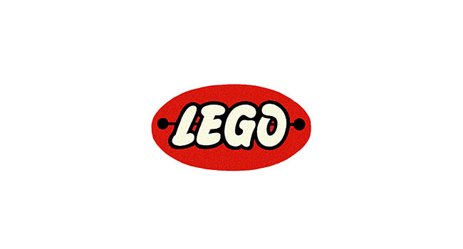

Lego zostało założone w 1932 roku przez Ole Kirka Christiansena w Danii. Firma początkowo produkowała drewniane zabawki, a w 1949 roku zaczęła produkować pierwsze klocki plastikowe
Od klasycznych klocków Lego po bardziej skomplikowane zestawy jak Lego Technic czy Lego Architecture. Lego rozszerzyło swoją ofertę o tematy takie jak Star Wars, Harry Potter, Minecraft
W 1947 przedsiębiorstwo Lego zaczęło produkować zabawki z tworzywa sztucznego. Wielki światowy sukces przyniosły przedsiębiorstwu klocki-cegiełki, składane razem za pomocą systemu wypustek i odpowiadających im gniazd, pozwalające na uzyskiwanie wielu możliwych kombinacji połączeń. Pierwszy rodzaj klocków wyprodukowany został w 1949 roku, w ciągu następnych lat przedsiębiorstwo stopniowo poszerzało asortyment. Sposób łączenia klocków został opatentowany 28 stycznia 1958. Począwszy od lat 60. XX w., zestawy klocków Lego umożliwiają budowę miast z modelami między innymi: domów, samochodów; zawierały także figurki mieszkańców.
